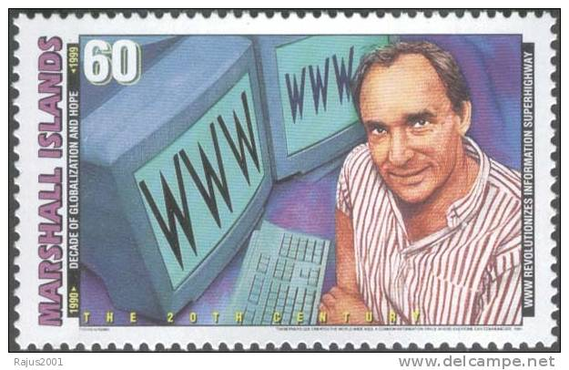

"Hyper Text Mark-up Language" 의 약자. 웹 페이지의 모습을 기술하기 위한 규약. 프로그래밍 언어가 아니라 마크업 언어다. 헷갈리지 않도록 하자. 웹사이트에서 흔히 볼 수 있는 htm이나 html 확장자가 바로 이 언어로 작성된 문서다. 최초 제안자는 CERN의 물리학자 티머시 J. 버너스리이다. URL, HTTP, WWW의 전신인 Enquire 등도 그가 세트로 개발하고 제안했다. TCP/IP 통신규약을 만든 빈턴 G. 서프(Vinton Gray Cerf)와 함께 인터넷의 아버지로 불린다.
